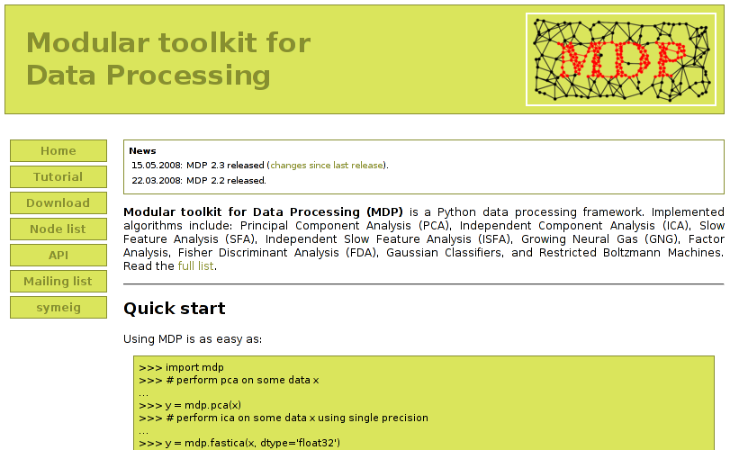

Modular toolkit for
Data Processing
Home
Installation
Documentation
How to cite MDP
Contact
Time Machine
¶
Screenshots of old MDP sites
¶
24.08.2004: MDP 0.9
¶
15.11.2004: MDP 1.0
¶
13.06.2005: MDP 1.1
¶
30.06.2006: MDP 2.0
¶
26.03.2007: MDP 2.1
¶
21.03.2008: MDP 2.2
¶
15.05.2008: MDP 2.3
¶

18.10.2008: MDP 2.4
¶
30.06.2009: MDP 2.5
¶
14.05.2010: MDP 2.6
¶